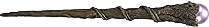

Malkallam, the Black Sorcerer, otherwise known as the Sorcerer of Kerhjer Valley, immediately notices the bulk that sets one building’s silhouette apart from the others. This is Castle Ghelder, decorated magically with the symbols of the current royal family. They could never look anything less than if they are in their prime. At this moment it is covered in diamonds (King Harold), sapphires (Queen Emma), emeralds (Crown Princess Emeralda), and pomegranates (Princess Anar). The king has hated Malkallam as long as he could remember, for cursing the kingdom to have no less than 5 sorcerers and no more than 1000 fairies.
It is getting close to twilight, when Malkallam’s powers are strongest. He will leave none too subtle hints that he is back from his exile in Kerhjer. And he is up to mischief again. Eventually, he will lure the royals to his lair, hold them prisoner, and take over the throne. All this thought process takes enough time that it is twilight by the time he pulls himself back to reality.
He gathers up his magic wand and looks into his crystal ball. It is like a spy camera that lets him see wherever he desires. And right now it is showing him all the royals and servants. The king and queen are getting ready for bed, the princesses are asleep, and the servants are gathered in their dining hall eating supper. They are all distracted, and no one will notice as he goes to the stables, the dragon barn, and the tallest tower.
Very quietly, he crosses the courtyard, and lightly taps the stable gate with his wand. It is well oiled, and swings open silently, letting him in. He enters, and goes straight to the princess’s unicorn, Joy. He turns half of Joy’s tail black and stabs her with a poisoned knife. She doesn’t wake. Malkallam breathes a sigh of relief.
He exits, and crosses to the dragon barn. He goes to the queen’s dragon, Hope, and turns her flames purple and shoots the tip of her tail with a poisoned arrow. Then he leaves, wraps his cloak around himself, and disappears with a crack.
He teleports to the top of the bell tower, dispatches a Schlob, and tiredly, (teleportation drains him of energy) taps a diamond with his wand. He sucks up the Schlob and releases it into the diamond. If a magical symbol is touched by a wand, the owner of the wand can control the magic source of that fairy. Also, if a Schlob possesses it, the fairy’s magic disappears. He gazes again into the crystal ball and sees King Harold in his room, his whitish glow fading, his wings going limp.
He goes over to the seeing pool and floats a leaf on it. On the leaf he places a folded piece of paper for the fairies to find. He thinks it is a sign of his rebellion. But is it?
He decides not to worry about the younger princess, for she is not a threat. The king, however, is very strong and good with the sword, Queen Emma is an excellent shot, and Crown Princess Emeralda is very dangerous on a unicorn. He doesn’t know of Anar’s skill with the sling.
When they awake, they will be met with a terrible surprise. He leaves the castle, but doesn't notice that one of the pomegranates decorating it is watching him.
It scurries off, wakes Princess Anar, Emeralda’s twin, and warns her. She turns into a pomegranate and flies off after Malkallam. She turns around at a muffled whinny. She goes to the stables and discovers Joy. Joy wakes up, stands up, and tries to say something. However a couple seconds later, she collapses. It is the work of Malkallam.
Queen Emma wakes up to the sound of crackling. She gets dressed and flies downstairs for breakfast, brushing her long strawberry blonde hair as she goes. She goes outside the sleeping rooms and sees the wall of the castle. It is usually decorated with diamonds. But now, it is covered in cracked diamonds. This is what woke her up.
She goes to check on Harold, but he is not in the dining hall. She goes to his bedchambers and lets out a strangled cry. He isn’t glowing with his aura the way he normally did. She wakes him and he gets dressed. Then they go outside. Harold tries to fly to the dining hall, but he falls straight onto the grassy field underneath. And lies there, unmoving. His normally brown hair is streaked with purple.
Emma immediately calls Emeralda and Anar. They come and she tells them to fetch Chloe, the Royal Healer. They fly off to the Royal Infirmary. They return minutes later with Chloe, who is holding a rolled up mint leaf.
She unrolls it and pulls out her magic wand. She turns the leaf into a stretcher and magicks Harold onto it. She takes him up to the infirmary. Anxiously, Emma follows her.
After checking Harold over, Chloe tells Emma that he is simply unconscious from the fall. Emma is relieved but that feeling disappears as soon as Chloe reports that his magic has somehow disappeared. She goes to see the princesses, and finds them in the stables, huddled over a shape that could only be Joy.
Tears flowing down her cheeks, Emeralda tells Emma what has happened. Emma immediately recognizes Malkallam’s magic. She makes a large sapphire and puts Joy on it. Then she takes Joy and the girls back to the infirmary. Chloe sees what happened. She takes Joy to the animal room and sees the poison. She recognizes it as the poison of a deathberry, or yew. She knows that the only antidote is the paste made of crushing water lily petals.
Water lilies are rare and mostly found in the house of Rose the Flower Fairy. Anar says that she will go and heads off to the stables to collect her unicorn, Phool. She rides Phool to the house of Rose, inside a large rose.
Rose says that she will help and gives Anar 5 lilies. She takes them back to Chloe, and Chloe crushes them to a paste. She spreads it like a salve on the wound, and Joy wakes up. Chloe says that she will have to stay in the infirmary overnight to make sure all the poison is gone before she is exercising again.
Then they hear a growl. Emma recognizes it as Hope. They go to the barn. Hope starts trying to say something but instead coughs up a lot of purple smoke and some sparks. Emeralda notices that there is poison involved. Chloe says that that is correct. But it isn't yew. Instead it is poisonous fungi and that the cure is finding a non-poisonous fungi and eating it. She has plenty of that, so she feeds it to Hope, and tells Emma to bring Rainbow, the color fairy. She does, and Chloe asks Rainbow to restore Hope’s smoke color, and Joy’s tail color.
Then they all go to the seeing pool and see what Malkallam has done. They also see the “sign of rebellion” and unfold it to read a prophecy. Then they see the Schlob and find out that it is possessing the diamonds of the castle. They call all their friends, and they each take a group of crystals and focus on removing the Schlob from it.
As they do this, the Schlob’s outline grows stronger on the top of the tower, and Harold gets his magic back. The diamonds grow whole again. Harold flies down, but crashes straight into Chloe. Chloe notes that he is still dizzy from the fall and takes him back to the infirmary.
Then Anar hops up on Phool, grabs her sling and bag of lead missiles and takes off toward the Schlob. She loads up her sling, whirls it over her head, and sends it flying into the Schlob’s arm. The Schlob tries to envelop her in shadow to suck out her life force, but Anar keeps changing position so the Schlob will not have enough time in one position. She hits the Schlob in the abdomen, knocking it off the tower. It keeps getting snagged by the pomegranates, and they keep throwing darts at it and weakening its power. In the end, it hit the ground, and gets speared on top of a super long spike that penetrates to its heart and it is all over.
Phool sails back to the ground, lilac mane and tail flying, and everyone congratulates her and Anar, then Anar takes Phool back to the stables. Phool takes a generous sip of water and eats some oats. Then Anar goes back to check on Harold.
He is resting and Chloe says he should be fine by the evening. She tells this to Emma and Emeralda and they are relieved. The rest of the day is like normal until Harold is released from the infirmary.
“In shadows deep where sorrow dwells,
A fairy’s heart with courage swells.
To break the curse of darkened fate,
She’ll wield her magic, strong and great.
With wings of light and spirit bold,
She’ll face the sorcerer, fierce and cold.
Through trials fierce, her heart will guide,
Releasing hope where fear once tried.
This fairy will risk her life,
In bringing the kingdom back to light.
With sunlight above, she dispels the strife,
Chasing away darkness, a wondrous delight.
Pomegranates sparkle in the warm daylight,
Each seed like a treasure, vivid and bright.
With her magic and laughter, she sets wrongs to right,
Reviving the kingdom, all hearts feel the light.”
The words of the prophecy ring in Anar’s mind as she grooms Phool. But there is nothing she can do about it. Harold soon recovers and is released from the infirmary. However, every time he sleeps, he has lots of horrible nightmares. He describes some of these to Emma, Emeralda, and Anar and they are horrified.
Remembering the prophecy, Anar asks Emma if she can go after Malkallam. Emma refuses. So Anar asks Harold. He agrees under these conditions. That she travel with her sling ever ready to use, go with both Phool and her dragon Dhuaan, take her magic pomegranate in case she needs her Seedfolks, and carry three communicating crystals; one for Emeralda, one for Gilbert, the knight and fairy of the oakleaf, and one for the legendary Ron, a King’s Watchman.
Anar agrees, packs up her kit, with her sling, lead missiles, compass, magic pomegranate, wand, cloak, communicating crystals, travel rations, apples, berries, tent, jade armor, and a canteen of pomegranate juice, and heads off to the stables. She grabs her saddle, bridle, and saddlebags. She saddles up Phool and fills her saddlebags.
She leads Phool outside, tethers her to a tree, and brings Dhuaan. She puts a second saddlebag on Dhuaan, so whatever she would not need easy reach to, she could keep separate. All that remains with Phool is her pomegranate, lead missiles, sling, compass, armor, communicating crystals, wand, and canteen. The rest is with Dhuaan. Dhuaan blows out a puff of smoke signifying that he is ready.
Anar climbs into Phool's saddle and they take off. They fly south, as that is the only land that Malkallam could find in the country of Ghelder. Occasionally, Anar checks their direction on her compass and corrects their course, or takes a swig from her canteen.
She stops at night, unsaddling Phool, giving her an apple and Dhuaan some berries, sets up her pomegranate-shaped tent, and eats some rations. She rolls up in her cloak, gets in the tent, and sleeps. The next morning, she packs up, goes to a spring and fills up her magic canteen, in which water turns to pomegranate juice, which heals her, and gets on her way.
She travels into late afternoon, and catches sight of a skull on a pole. She knows this is a sign that she is going in the right direction. A few hundred meters off, she finds a crystal ball, put so Malkallam can spy without having to go very far. The sky blackens, and she finds herself at the edge of Kerhjer Valley.
Emeralda wakes up and goes to see where Anar is. She isn’t in her bedchamber, the dining hall, stables, or dragon barn. So she asks Emma. Emma responds that she is also looking for Anar. They go to ask Harold. Harold says that he let her go after Malkallam. Emma gets mad and asks why he did it, that it is dangerous there. Harold responds that he set conditions so that Anar is safe, and that she can communicate with Emeralda. Emeralda notices that there is a lump under her pillow. It is a communicating crystal and Anar’s face is just barely visible. This means that she is not using it right now.
Emeralda goes downstairs to the dining hall with the crystal in her pocket and jumps suddenly as it flashes green. Emeralda flies to the private garden and takes it out. Anar’s face is crystal clear now and she can just make out Phool and Dhuaan. Flashing green means that someone is trying to call and to take it out is to accept that call.
She asks where Anar is and Anar answers that she is at Kerhjer Valley but nowhere near Malkallam and his spy cameras. Emeralda is relieved but still slightly worried. She calls Emma and Harold to talk to Anar, and they come over immediately to see her. She says that she is at the edge of Kerhjer Valley but nowhere that Malkallam can spy on her.
They make sure that Anar is following Harold's conditions that she travel with her sling ever ready to use, go with both Phool and Dhuaan, take her magic pomegranate, and carry three communicating crystals; one for Emeralda, one for Gilbert, and one for Ron.
Of course, she follows them all the time.
She would never ever let Harold and Emma down.
Or Emeralda.
Emeralda most of all.
Emeralda asks how many more Schlobs there are. There are thousands. But Anar has millions of Seedfolks. Schlobs are made by sucking the life force out of people. On the contrary, Seedfolks are made automatically depending on space in the pomegranate. And as soon as a Seedfolk dies, it is reborn in the pomegranate. If a Schlob dies, it is gone forever. Seedfolks can shoot pomegranate juice, deadly to their enemies. Schlobs can only try to envelop somebody in shadow, suck out their life force, get more powerful and kill the enemy.
But this takes time, at least 5 minutes, so Malkallam has supplied them with paralyzers so that if the enemy is still for more than 30 seconds, it can paralyze them. This is not good in battle and the good guys have to keep moving on their feet.
Anar looks at the center of Kerhjer Valley and sees a moving mass of black. It is Malkallam’s lair and it is swarming with Schlobs. With all the Schlobs, Anar can not tell where the entrance is, so she guesses that the place with a path leading to it is the door. She does not want to go through the heavily guarded door, so she goes around the place to the opposite side of the front door, where she assumes there is a less guarded back door.
It is not less guarded, but it is a door. Instead, it is more guarded than the front door, to keep invaders out. She devises a clever tactic. She will pretend to be going through the front door, but call on Gilbert while all the Schlobs are distracted and have him go inside while she is fighting, then get an army of oakleaves and help her defeat them from the inside to let her in, and destroy all the Schlobs.
They would have to go and get wonderful weapons, so she would camp out of sight of the Schlobs and talk to Emeralda for weapons and Gilbert for help. She backtracks to the place where she has first seen the lair and takes out her crystals. She calls Emeralda and talks to her for a while, and then asks Emeralda to send her Gilbert’s backup weapons and shield. Then she calls Gilbert and asks him to come.
He appears in minutes with his unicorn, dragon, weapons, shield, and backups. He gives the backups to Anar and Anar gives him a pomegranate with a message inside. He cracks it open and starts to eat it, and then realizes that there is a hollow where seeds were clumped together in the center. She has transformed the paper into a clump of seeds which would transform back as soon as it is touched by another fairy symbol. Gilbert pulls it out and brushes it with an oakleaf. It becomes a paper with Anar’s plans to siege the castle on it.
They camp the night, and then gallop away to their stations to wait out the time until midday, when Schlobs has the least power and fairies has the strongest power. They put the plan in motion, but she has underestimated the Schlobs and is surrounded.
She tries to hack her way through the crowd but they will not let her. Gilbert isn’t having much success either. So he retreats and goes to pretend to escape and instead goes to help Anar. He ends up having to back off and watch as Anar comes back into view, hacking and stabbing. Her hair is messy and her clothes disheveled, but she is unscathed. He rushes forward to help, but is impeded.
He trips over a rock and sprawls facedown in the mud. The Schlobs advance, but before they can get close enough to paralyze him, Anar traps them in a giant pomegranate. She sends them to the castle to be taken care of and pulls Gilbert back to the campsite.
Anar wakes to the sound of Gilbert groaning. Even though he has recovered from the fall, his foot is still sore where the rock has cut him. On the other hand, they have gotten rid of ¾ of the Schlob army. That will be ¾ less that they will have to battle once they get inside. Of course, only the Schlobs posted outside noticed Anar, so they can get in. The problem comes from the fact that there are Schlobs posted inside. They are intent on only letting other Schlobs and Malkallam pass. She realizes that if they combine their powers, along with that of the animals, they can disguise themselves as Schlobs. But the Schlobs have a meeting outside and the missing ones will certainly be noticed.
So they have to be quick, and have to leave enough Schlobs to not make it look suspicious. Or they can make the Seedfolks also disguised as Schlobs, that way they have help and they don’t look suspicious. So they disguise themselves. They start swarming all over the lair to look like the original Schlobs. Soon they see the Schlobs gathering outside. They all come down and join the meeting. The other Schlobs are suspicious, but not much.
The meeting starts, but the Seedfolks and fairies can’t understand them. This increases their suspicions. So they just stay silent. But the Schlobs have had enough. They start blabbering away to each other to get the fairies curious. Suddenly, the Seedfolks get scared and disappear to the magic pomegranate. They grab Gilbert and Anar and pull them to the lair for Malkallam to deal with.
Gilbert turns into an oakleaf, slips away, and is caught by the wind. He grabs all of their possessions and packs them up. Then he pulls the animals to safety.
Meanwhile, Anar is being locked in the dungeons. The other Schlobs don’t really care that ¾ of their number just disappeared. They won’t tell Malkallam about that. And Anar is lucky for that.
Emeralda wakes up to a flashing green light and a slight sobbing noise. She quickly goes to her communication crystal. She knows enough to know that it is Anar. And something bad has happened. She picks up, and Anar tells her what happened.
Emeralda realizes that Anar has forgotten her magic key. It is topped with a pomegranate and can open any door. She told Anar and Anar reaches into the communicating crystal and throws a hollow pomegranate at Emeralda. She throws it back with the key inside.
Anar says she will work on creating a robot of herself that could be kept prisoner. Emeralda tells Harold and Emma and they create it within days. Emeralda shrinks it and sends it back to Anar.
Anar says she would escape later on. She keeps it in the pomegranate and acts as if it has never happened. The Schlobs soon stop checking on her and guarding her door, so Anar takes her opportunity to escape a week after being caught.
Anar grabs her hollow pomegranate. She pulls out a robot copy of herself and enlarges it so it can remain captured in her place and she can escape. She grabs her other things and slides her magic key into the lock. It opens and she slips out. She hurries back to the campsite and finds Gilbert with Phool, Dhuaan, and all of their stuff.
It takes an enormous amount of effort not to shout. She runs over to her unicorn and dragon to hug them and turns to Gilbert. She thanks him for taking care of the animals and waiting for her.
She then calls Emeralda and tells her sister that she is safe and there is no need to worry. Emeralda passes on the message to Emma and Harold. They are all relieved, even more so when Anar tells them that she has gotten rid of ¾ of the Schlob numbers.
They are more proud than relieved because they know Anar can take care of herself. They tell her that she can call on them whenever she needs help and they will come. Gilbert manages to put in one hello before they hang up.
The following morning sees Anar and Gilbert preparing to attack Malkallam and his lair, and to turn the lair to a pile of dust with its owner inside.
The sorcerer’s curse would finally be broken, and the kingdom would be free again.
Anar and Gilbert are astounded at how much Malkallam has bumped up security. Or not bumped up. All he has done is hire a goblin called Korgul and is paying him in obsidian (before he became a sorcerer, he was the Obsidian Fairy. Now that is the king’s advisor, Gejcon).
Korgul will be his sidekick for 5 pounds of obsidian a day. Malkallam is more than happy to provide that. Anar and Gilbert know this from their careful scouting trips to various cracks, doors, and windows. They are spying on Malkallam and the Schlobs.
They create a plan to sack the castle. Anar will call Emeralda, Emma, and Harold and have them distract the Schlobs and she and Gilbert will be inside finding Malkallam. They will then become their symbols with wings and fly away. (When you lose your position as a fairy, you lose your wings and wand and any other magic items.) Once they found Malkallam, they would bring him outside, release the Seedfolks and an army of oakleaves and battle him and his remaining Schlobs.
They put this plan in motion by gathering all they need and relieving the animals of the rest. The rest will stay in a hidden crevice in the campsite. They only keep their weapons, wands, communicating crystals, and canteens.
For Anar, weapons means sling, least missiles, Gilbert's backup sword and shield, and armor made of the strongest jade. For Gilbert this means his pen sword, wristwatch shield, and crystal armor. He had procured this armour from the crystal mountains in the northwest of Ghelder.
Anar pulls out her communicating crystal that connects with Emeralda and calls her sister. Emeralda picks up and Anar tells her her plan. Emeralda says she will bring Emma, Harold, and their unicorns and dragons.
They appear some minutes later with their battle kits. It is time to free the kingdom.
The Schlobs were very easy to distract, so Anar and Gilbert went inside. They search through every wall, door, nook, and cranny. In the end they find a trapdoor in the ceiling and find a portal inside.
They go through the portal and find 10 layers of locked doors. Gilbert groans in despair, but Anar brightens him up with her key. It unlocks the doors, as the keys were forged after Malkallam left the kingdom. They find Malkallam’s evil laboratory.
It is all black and obsidian to the castle’s style. Malkallam is inside, bent over a table. He is fashioning a crown. It is obsidian, but otherwise an exact copy of the crown of Ghelder. He expects to become king.
They loop a rope of pomegranate vines around his wrists and tie them together. They drag him outside and only then untie him. Untying him is a mistake. He lunges at them to try and pull them to the ground, but the royal family is too fast for him. Anar trips him and in his mad rush comes crashing down face first. A pool of blood spreads. They have pulled paralyzers from the Schlobs whom they have killed and shoot Malkallam with them.
He freezes and Gilbert and Anar tie him up head to foot and back him against the castle wall so he can not escape.
Then they get rid of the rest of the Schlobs, all the while Malkallam regaining consciousness. His nose is agony. It is broken but he can not do anything. The best he can do is distract himself from it. He is realizing what is happening, and knows that he has to do something.
Malkallam has discovered that he could summon things from wherever he wants. So he pulls his knife to him and his wand. He cuts himself free. Then he sneaks up on the princess, the younger one.
Anar notices this and swiftly sticks a pomegranate on the blade of his knife. She also dispatches Seedfolks to get rid of him. But this is not that easy. He slices the pomegranate in half, releasing juices from it, and sprays poison at her from his wand. Anar gets a faceful of the stuff and stumbles backward. Emma grabs 2 crystals from her pocket and whispers something into them.
Chloe appears some minutes later with a canteen and water lily paste.Anar is quickly losing consciousness and the Seedfolks losing power.
Chloe washes away the poison and feeds Anar water lily paste. Malkallam is enraged and throws away his shield, then lunges at Chloe. She turns into a mint leaf and Anar turns into a miniscule pomegranate that can be carried by the leaf. They come back into the battle and everyone becomes their symbol. Malkallam is faced with a diamond, an emerald, a sapphire, a pomegranate, a mint leaf, and an oakleaf. He shoots deadly araucania poison at the fairies. Only Anar escapes. Everyone else gets hit by the poison. They turn back to their true forms and collapse to the ground.
Anar tells Ron to come and bring arrows made of light. Attacking the enemy with weapons made of light is the only way to heal anyone with this poison. Three King’s Watchmen appear as well, instantly recognizable as Ron, his friend Eugene, and his apprentice Ian. They heal the fairies by shooting arrows fashioned with light at Malkallam. The fairies slowly got to their feet and then suddenly went over to Malkallam. He is controlling them and Anar has to get them back.
Anar creates a huge storm of fairy dust and covers Malkallam with it. It breaks his hold over Emeralda only. The two of them start shooting magic at him. It does not work at first as the spells are a little weak. But gradually the spells grow stronger and start to push him backward. He stumbles and is forced against the wall. This breaks his hold over the other fairies and they go over to the two girls.Malkallam is now faced with 6 fairies and 3 elves.
He does not recognize this as a lost battle and still tries to destroy them. The Seedfolks disappear as Anar tells them to. Then all the fairies and elves merge into a large fairy shape made of fairy dust. Then Malkallam knows he can never win on his own. He calls Korgul to him and is ready to defend his life. The fairy made of fairy dust towers over Malkallam. He tries to hit it with a dart but misses. Korgul starts forward and suddenly freezes with a surprised expression. The fairy has sent a blast of dust at him. Bits of him turn into fairy dust and blow into the figure. Korgul is gone and the figure is stronger.
It separates into each individual person and all their weapons are invincible because they're now made of fairy dust from the defeated Korgul. They merge the weapons into a javelin which separates into 9, one for each person.
Ron throws his, hitting Malkallam’s wand arm and turning it into fairy dust. Ian hits the other arm, and Eugene hits a leg. The fairies all throw at the same time and Malkallam becomes a sorcerer-shaped clump of fairy dust. His curse is broken, his lair crumbles, and the kingdom is free from the spell.
Back at Castle Ghelder, there is a party in full swing. The fairies and elves are the guests of honor for defeating Malkallam. The prophecy is preserved in the royal museum for being instrumental in the defeat of Malkallam.

Ian is goofing off and keeps shooting arrows all over the room that explode in a bunch of confetti that shower on Ron’s head. Eugene is laughing at this. Everyone but Ron is enjoying the time and having fun. Ron looks as grim as ever. He does not like attention which he is getting a lot of, and tells Ian that if he does not stop shooting those arrows, he will see how well Ian can shoot with his arms chained to a tree. Ian stops.
Later, after the High Chamberlain, Lord Gejcon, has given his speech, and Harold upgrades Anar to Crown Princess, Ron hears something far behind him. He goes closer to hear it better. He hears a blast and sees the confetti too late.
That is the last straw. He shoots a blast of mind magic at Ian to make him stop.
The next day, as everyone goes downstairs for breakfast, Ron pulls Ian away. He reminds Ian of what he said earlier, and makes sure that he is chained to the tree before he goes to the dining hall. The only thing that Ian hears is Ron’s laughter as he leaves, and then Eugene’s as Ron tells him what has just happened.